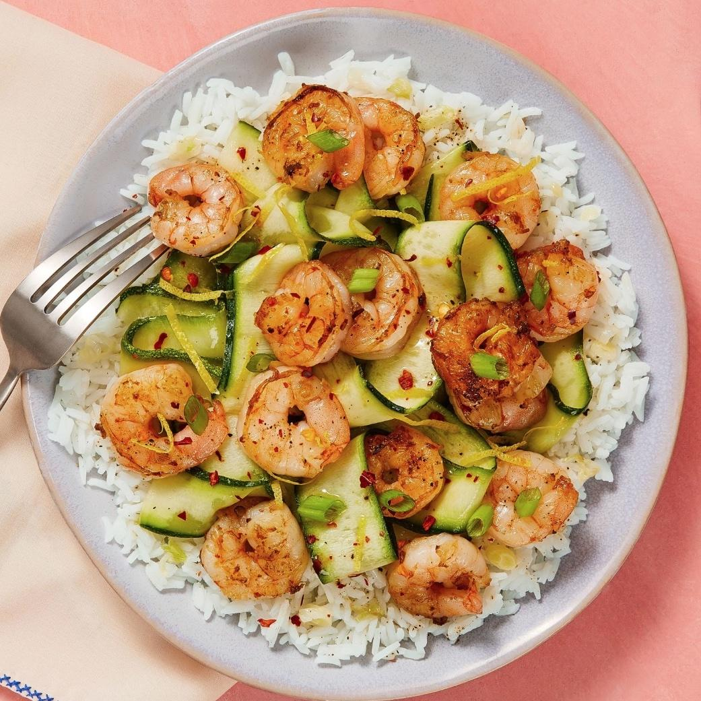

Shrimp & Zucchini Ribbons

This modern classic will become an instant family favorite, bringing the robust taste of season shrimp
to a bed of decadent flavorful rice. Topped with amazingly seasoned and tasty Zucchini ribbons
Information
Prep Time: 35 minutes
Servings: 4
Ingredients
- Scallions
- Jasmine Rice
- Lemon
- Zucchini
- Basil Oil
- Shrimp
- Chili Flakes
- Garlic Herb Butter
- Olive Oil
- Butter
Instructions
- Cook Scallions
- Wash and dry all produce
- Trim and thinkly slice scallions, separating whites from greens.
- Melt 1Tbsp plain butter in a small pot over medium-high heat.
- Add scallion whites and cook, stirring, until just softened, 1 minute
- Season with salt.
- Cook Rice
- Stir rice into pot with scallion whites.
- Add 1 1/2 cup water and a pinch of salt.
- Bring to a boil, then cover and reduce to a low simmer.
- Cook until rice is tender, 15-18 minutes.
- Keep covered off heat until ready to serve.
- Prep Zucchini
- Meanwhile, zest 1 lemon and quarter both lemons.
- Trim ends from zucchini.
- Working over a large bowl, shave zucchini lengthwise into ribbons using a peeler, rotating as you go.
- Stop once you get to the seedy core; discard core.
- Marinate Zucchini & Prep Shrimp
- Toss zucchini ribbons with basil oil and half the lemon zest.
- Season with plenty of salt and pepper.
- Add a squeeze of lemon juice to taste; toss to coat.
- Set aside.
- Rinse shrimp, then pat dry with paper towels and season all over with salt and pepper.
- Cook Shrimp
- Heat a large drizzle of olive oil in a large, preferably nonstick, pan over medium-high heat.
- Add shrimp; sprinkle with a pinch of chili flakes if desired.
- Cook, stirring, until pink and cooked through, 3-4 minutes.
- Stir in garlic herb butter and a squeeze of lemon juice.
- Finish & Serve
- Fluff rice with a fork and season with salt and pepper; divide between plates.
- Shake off any excess marinade from zucchini ribbons, then arrange over rice.
- Top with shrimp and drizzle with any remaining sauce in pan.
- Garnish with scallion greens, remaining lemon zest, and chili flakes to taste.
- Serve with remaining lemon wedges on the side.